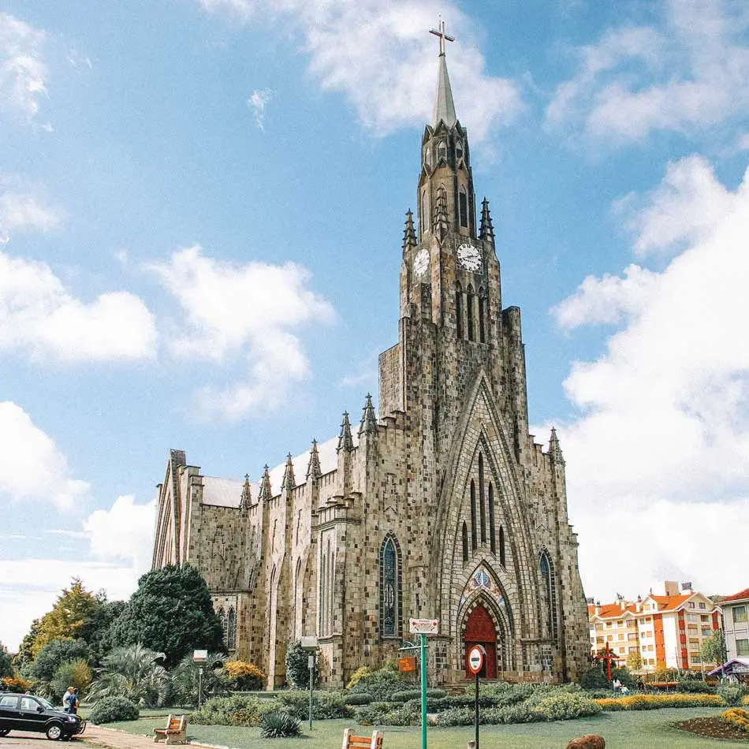
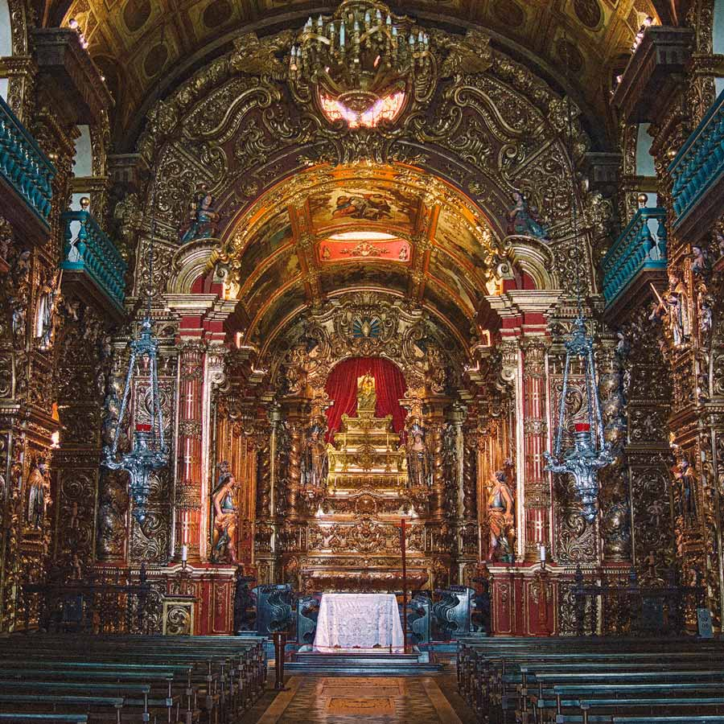
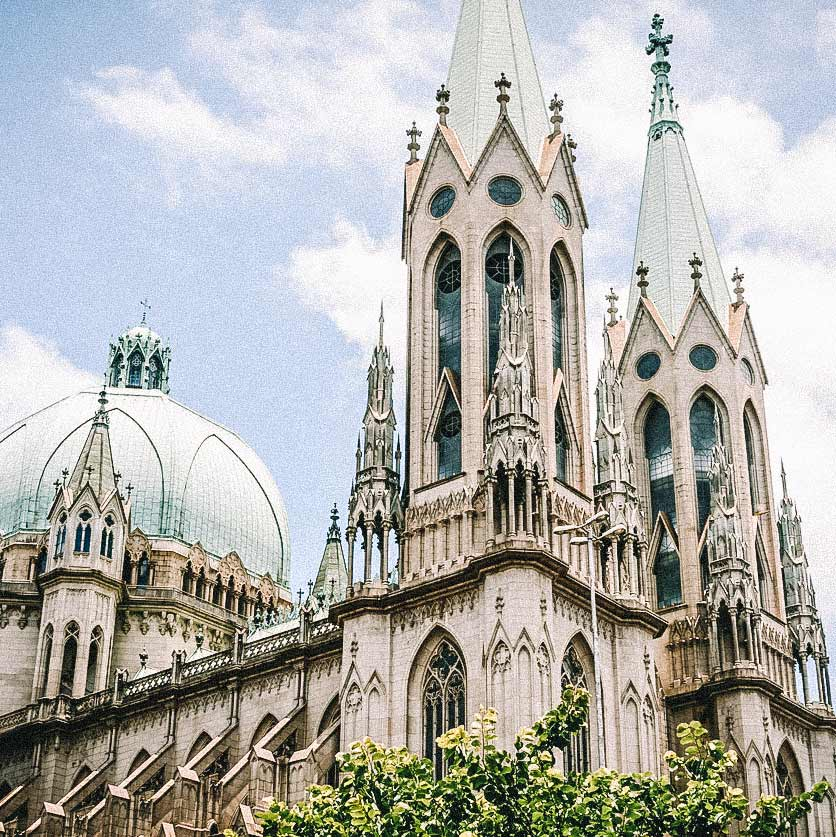

Belíssimas Igrejas do Brasil
Catedral de Pedra Nossa Senhora de Lourdes - Canela, Rio Grande do Sul

A Catedral de Pedra, assim conhecida por moradores e turistas, é um dos maiores cartões-postais de Canela, cidade vizinha de Gramado. Construída a partir de 1953 em estilo gótico, a catedral foi revestida com pedras e possui uma torre com 65 metros de altura, onde ficam 12 sinos. Também chamada de Catedral Nossa Senhora de Lourdes, o local permite visitas em seu interior e na torre, que possui uma vista panorâmica de Canela e um acervo de vestes e arte sacra.
A Catedral tem um amplo jardim ao seu redor e, além da beleza de sua construção, recebe uma iluminação especial durante a noite que a deixa ainda mais bela!
Mosteiro de São Bento - São Paulo

O Mosteiro de São Bento de São Paulo é um local histórico e religioso localizado no Largo de São Bento, no Centro Histórico da cidade de São Paulo, no Brasil. Fundado em 14 de julho de 1598, a atual igreja foi construída entre 1910 e 1914, a partir do projeto criado pelo arquiteto alemão Richard Berndl.
Catedral Metropolitana de São Paulo

Catedral Metropolitana Nossa Senhora da Assunção e São Paulo, informalmente conhecida como Catedral da Sé, é o principal templo católico da cidade de São Paulo, Brasil. Localiza-se na Praça da Sé, na Zona Central do município.